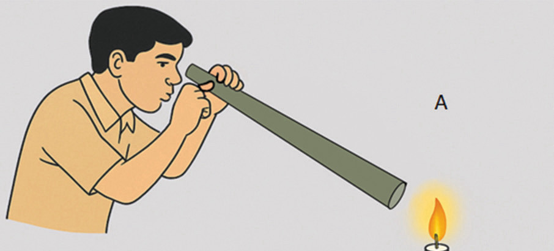
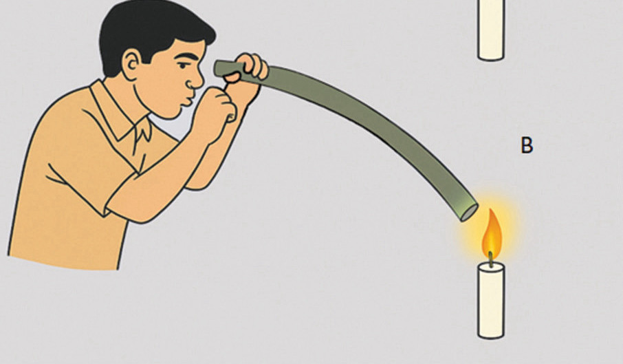

Now, place a burning candle in front of board A and look through the hole in board C.
Then, move board B sideways slightly and again look through the pinhole in board C.
Questions
Focusing on observations in steps 4 and 5:
(a) What insights did you gain from steps 4 and 5?
(b) Draw patterns or themes from your observations in steps 4 and 5.
The rectilinear propagation of light is a fundamental principle which states that light travels in straight lines in a uniform medium.
This principle is crucial in designing optical devices like cameras, telescopes, and lasers, where precise light paths are necessary for functionality.
The concept of rectilinear propagation of light helps to understand the behaviour of light, making it important in both science and practical applications.
Task 4.2

Hold the straight tube in front of the light source and note what you observe (Figure 4.2 (A)).
Next, hold the curved tube (Figure 4.2 (B)) in front of the light source and again note your observation.


(a) What did you observe about the path of the light in the straight tube?
(b) How did the light behave when it travelled through the curved tube?
(c) What conclusions can you draw about how light travels through different shapes of tubes?
Transmission of light
The ability of light to travel through matter varies from one substance to another.
When light travels through matter, it is said to be transmitted (passed through).
When discussing light transmission, materials are classified into three categories, namely: transparent materials, translucent materials, and opaque materials.
Transparent materials
are materials that allow light to pass through them. You can see through transparent materials without obstruction, as shown in Figure 4.3. These materials appear to be clear. Examples of transparent materials